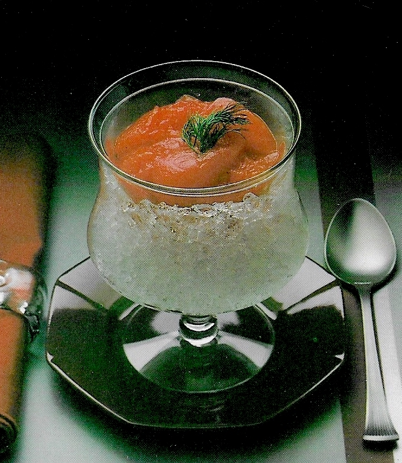

APPE-TEASERS

INGREDIENTS
JELLIED TOMATO MADRILENE
- 2 tablespoons unflavored gelatin
- 2 and a quarter cups tomato juice
- 3 chicken bouillon cubes
- 2 cups boiling water
- 1/2 teaspoon grated onion
- 1/8 teaspoon salt
- Dash of pepper
LEMON SOUP
- 1 can condensed chicken broth
- 1 cup water
- 1 egg
- 2 tablespoons lemon juice
STEPS
JELLIED TOMATO MADRILENE
- Sprinkle gelatin on tomato juice to soften
- Dissolve bouillon cubes in water; stir into gelatin mixture until
gelatin is dissolved
- Stir in onion, salt and pepper
- Refrigerate until set
LEMON SOUP
- Measure all ingredients into small saucepan
- Beat with rotary beater until blended
- Heat just to boiling over low heat, stirring constantly to prevent curdling